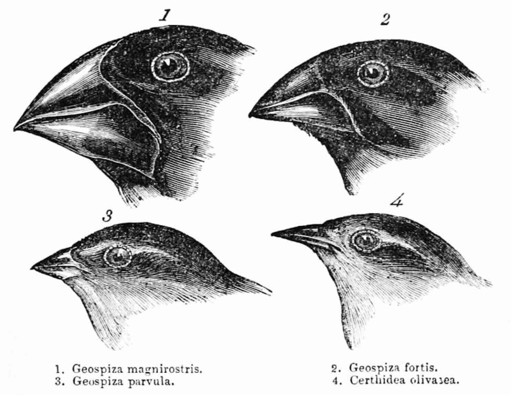
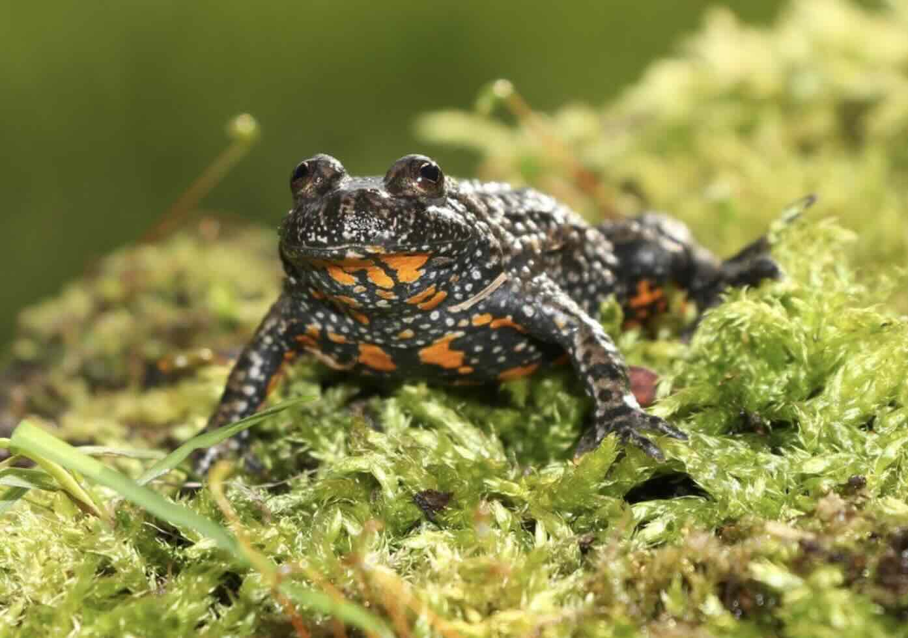
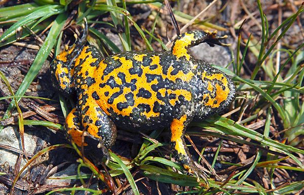
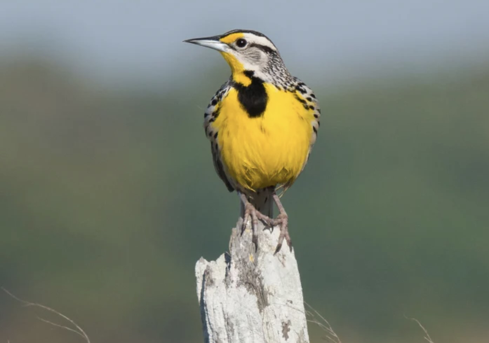
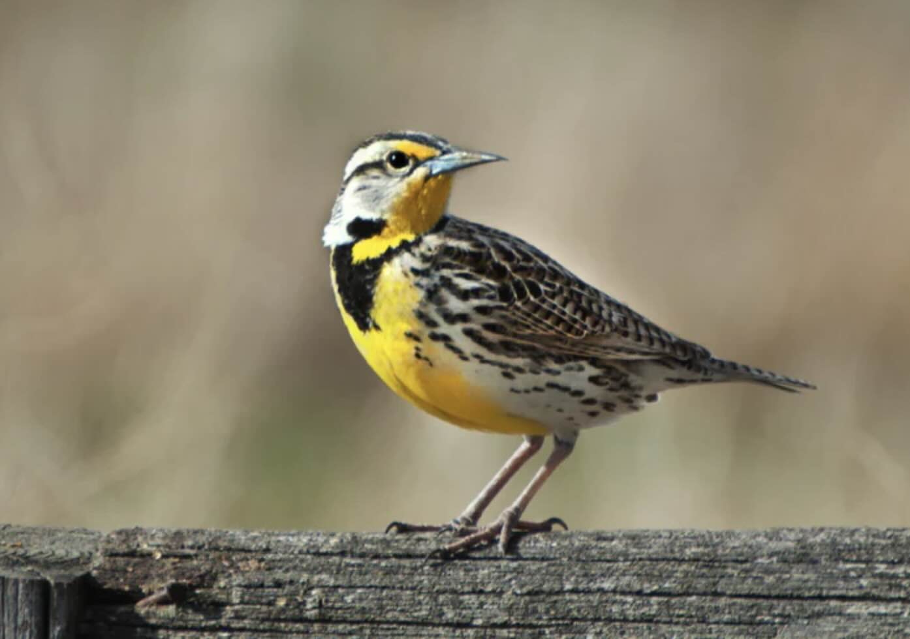

2 Speciation: Mechanisms of Biodiversity Generation
3 —
4 title: “Speciation: Mechanisms of Biodiversity Generation”
5 subtitle: “How Diversity Arises in Ecosystems”
7 institute: “Newquay University Centre”
8 format:
9 pdf: default
# revealjs: # theme: sky # transition: slide # slide-number: true # chalkboard: true # preview-links: auto # css: custom.css # html: # code-fold: true # include-in-header: # text: | #execute: echo: false # —
9.1 Learning Objectives
By the end of this session, you will be able to:
- Define speciation and explain its role in generating biodiversity
- Distinguish between allopatric, sympatric, parapatric, and peripatric speciation
- Identify geographic and reproductive barriers that facilitate speciation
- Apply speciation concepts to real-world conservation scenarios
- Evaluate evidence for different speciation mechanisms in case studies
9.2 Opening Question
9.3 What is Speciation?
Critical Requirements:
- Reproductive isolation (reduced gene flow)
- Genetic divergence (populations accumulate different mutations)
- Time (typically thousands to millions of years)
9.4 The Biological Species Concept
Limitations to Consider:
- Asexual organisms (no interbreeding)
- Ring species (continuous variation)
- Chronospecies (fossils - temporal separation)
- Microorganisms with horizontal gene transfer
No single species concept works for all organisms!
Ring species: where a species is divided by some geographical barrier into two close but separate populations that can interbreed. In turn, the one to the east (say ) is separated from another close by population with which it can also interbreed. This process of variation goes on continuously around a ring of locations until a population finds itself next to the original population. By now, differences between adjacent populations have accumulated to the point where these two populations cannot interbreed and are effectively two different species.
Chrono species - Where a evolutionary change occurs over time within a single lineage, so that a species at one part of this lineage is very different from one at another, without the lineage having split into two diverging branches.
Horizontal gene transfer This is where a bacterial organism transfers genetic material to another organism that is not its offspring. By this process bacteria are able to respond and adapt to their environment much more rapidly than is possible by the process of mutation.
9.5 The Speciation Continuum
Panmixia → Population structure → Subspecies → Incipient species → Good speciesComplete gene flow ←―――――→ Complete isolation
An evolutionary significant unit (ESU) is a population or group of populations that is considered genetically and evolutionarily distinct enough to warrant separate conservation efforts. ESUs are identified by their historical isolation and unique evolutionary trajectory, possessing unique genetic diversity that requires protection. They are crucial for conservation because they allow for management actions to be taken for specific populations, not just entire species.
9.6 Interactive Activity
9.6.1 Place these examples on the continuum
- Herring gulls (ring species)
- Ensatina salamanders in California (ring species?)
- Polar bears and grizzly bears (fertile hybrids possible)
- Lions and tigers (hybrids usually sterile)
- European and American robins (different genera)
The Ensatina (Ensatina eschscholtzii) salamander has been described a ring species complex in the mountains that surround the Californian Grand Central Valley. In a hoseshoe around this valley, 19 subspecies can each interbreed with the subspecies next to them on the horseshoe, but the subspecies on the western and eastern ends of the horseshoe cannot do so. As such, the species complex can be regarded as an example of incipient speciation.
Note that some authors, notably Jerry Coyne, have argued that ‘ring species’ is an unnecessary term - they are simply instances of parapatric speciation, where speciation occurs between adjacent populations along a gradient.
Polar bears and grizzly bears are closer on the species continuum than lions and tigers.
The two bear populations can interbreed in the wild. Although this does not happen very often, it is becoming more frequent as climate change forces grizzly bears north into arctic territories. Their offspring are also sometimes viable, particularly females, so that there can be gene flow between the two. Further, genetic analysis shows that polar bears and grizzly bears diverged only a few hundred thousand years ago. Hence thw two are regarded as an example of incipient speciation, meaning that they are populations in the process of diverging but still genetially compatible enough to produce ferticle offspring.
Lions and tigers on the other hand are more distantly related. They share the same genus Panthera so that they can in principle produce offspring, but there is (now) almost no overlap of their geographic ranges, with lions almost exclusively in Africa and tigers exclusiely in Asia. Interbreeding only occurs in captivity and the offspring (ligers and tigons) are mostly sterile, which is a significant barrier to gene flow.
Hence, lions and tigers are at a more advanced stage of speciation than are polar bears and grizzly bears.
European (Erithacus rubecula) and American (Turdus migratorius) robins are not closely related. They are in different families and are separated by an ocean and by millions of years of evolution since they shared a common ancestor. Their similar appearance is an example of convergent evolution, whereby different species independently evolve similar traits in response to having to adapt to similar environmental niches.
Hence on the speciation continuum from complete gene flow to complete isolation, the two ring species would be towards but not fully at the complete gene flow end, then would come polar bears and grzzlys, then lions and tigers and finally at the complete isolation end would come European and American robins.
9.7 Geographic Modes of Speciation
Allopatric
Complete geographic separation
Parapatric
Adjacent populations along gradient
Peripatric
Small isolated population at range edge
Sympatric
Within same geographic area
9.8 Allopatric Speciation
Classic Model:
- Continuous population → geographic barrier arises
- Gene flow ceases between populations
- Populations diverge (drift, selection, mutations)
- Reproductive isolation evolves (often as byproduct)
- Populations can no longer interbreed even if reunited
Most common mode of speciation
9.9 Example: Darwin’s Finches

Key insight: Geographic isolation provides opportunity for ecological specialization
9.10 Example: Grand Canyon Squirrels
9.10.1 Kaibab vs. Abert’s Squirrels

- Separated by Grand Canyon ~5 million years ago
- North rim: Kaibab squirrel
- South rim: Abert’s squirrel
- Distinct colour patterns, slight size differences
- Status: Subspecies or full species? (Debated!)
Demonstrates the speciation continuum in action
9.11 Conservation Relevance
9.11.1 Habitat Fragmentation
Result:
- Creates isolated populations vulnerable to extinction
- Reduced genetic diversity
- Limited gene flow
- Demographic stochasticity
Timescale matters: evolutionary time vs. ecological time
Demographic stochasticity refers to the impact that deaths of individuals can have on the viability of small populations.
9.12 Exercise
Assuming that the isthmus prevented gene flow between marine species on each side of it, reproductive isolation today would most likely occur if significant genetic divergence had taken place in the 3 million years since the isthmus formed. This would be encouraged if the biotic and abiotic environments differed significantly on each side of the isthmus, so that populations on each side that derived from the same original species would evolve differently to better fill their respective niches.
The Kaibab / Abert’s squirrel case at the Grand Canyon shows that speciation, or at least something close to it, can occur if a population is divided into two and left for 5 million years, even if the environments are similar for each sub population. Thus the 3 million years since the isthmus was formed could be enough time for full reproductive isolation to arise, so long as the rate of divergence is sufficient.
9.13 Peripatric Speciation
Key Mechanism: Founder Effect
- Small population implies reduced genetic diversity
- Genetic drift more powerful in small populations
- Rapid divergence possible
Why Different from Standard Allopatric?
- Asymmetric process (small vs. large population)
- Greater role for drift
- Potentially faster speciation
Genetic drift
9.14 Example: Hawaiian Drosophila
Hawaiian Islands: A natural laboratory for studying speciation
9.15 Parapatric Speciation
Key Feature: No complete geographic barrier, but selection against migrants or hybrids arising from an environmental gradient giving rise to selection pressures. If strong enough then selection can overcome gene flow.
Critical Question: What level of gene flow prevents parapatric speciation? : it depends on the degree of selection pressure.
9.16 Example: Grass on Mine Tailings
Key insight: Strong selection can overcome gene flow
See for example: Antonovics, J. (2006) ‘Evolution in closely adjacent plant populations X: long-term persistence of prereproductive isolation at a mine boundary’, Heredity, 97(1), pp. 33–37. Available at: https://doi.org/10.1038/sj.hdy.6800835.
9.17 Sympatric Speciation
What Makes It Possible?
- Polyploidy (especially in plants) - instant reproductive isolation
- Disruptive selection + Assortative mating
9.18 Polyploidy
Autopolyploidy
Chromosome doubling within species
Allopolyploidy
Hybridization + chromosome doubling
~50-70% of flowering plants have polyploidy in their evolutionary history
Result: Instant reproductive isolation from parent species
9.19 Example: African Cichlid Fishes
Fastest vertebrate radiation known
9.20 Example: Apple Maggot Fly
Important: Shows speciation can be observed, not just inferred
9.21 Reproductive Barriers
Prezygotic
Prevent mating or fertilization
- Habitat isolation
- Temporal isolation
- Behavioral isolation
- Mechanical isolation
- Gametic isolation
Postzygotic
Reduce hybrid fitness
- Hybrid inviability
- Hybrid sterility
- Hybrid breakdown
9.22 Barrier Efficiency
9.23 Interactive Exercise
9.23.1 Barrier Identification
Work in pairs to identify barriers in the following case studies (20 minutes)
Four Case Studies:
- European Fire-bellied and Yellow-bellied Toad.


left: European fire-bellied toad Bombina bombina, right: Yellow-bellied toad B. variegata.
The eastern European fire-bellied toad(Bombina bombina) and the western European yellow-bellied toad (B. variegata) diverged from a common ancestor in the last glacial maximum, ~25,000 years ago. Their ranges meet in a long hybrid zone that is only about 6 km wide, with the eastern toad preferring the lowlands and the western European toad the uplands
- Narrow hybrid zone (~6 km wide) has persisted for thousands of years
- Hybrids are viable but slightly less fit.
- What maintains this zone?
- What barriers are operating?
- Eastern and Western Meadowlarks


left: Eastern meadowlark, right: Western meadowlark. Similar appearance, different songs.
Eastern Sturnella magna and western S. neglecta meadowlarks are distinct species that look very similar, but their main differences are their songs and some minor plumage details. The eastern meadowlark has a simpler, whistled song, while the western meadowlark has a more complex, bubbly warble. The western meadowlark often has less white in its tail and fainter head markings than the eastern meadowlark.
- Broadly overlapping ranges across the midwestern USA
- Very similar appearance
- Different songs
- Rarely hybridize
- What type of isolation?
- What might have initiated divergence?
- Blue Mussels (Mytilus spp.)
- Two species overlap on Atlantic coasts
- Spawn at different temperatures
- Hybrids occur but are selected against in intermediate habitats
- What barriers?
- What mode of speciation?
- Palms on Lord Howe Island
- Howea belmoreana (acid volcanic soil) and H. forsteriana (calcareous coralderived soil)
- Separated by ~100m in places
- Flower at different times (5 weeks apart)
- Likely sympatric speciation
- What barriers?
- Why didn’t gene flow prevent divergence?
9.24 Key Insights: Reproductive Barriers
Multiple Barriers Usually Accumulate - Speciation rarely depends on a single barrier
Reinforcement - Selection strengthens prezygotic barriers in sympatry (when hybrids are less fit)
Cascade Effect - One barrier can facilitate evolution of others
9.25 How Long Does Speciation Take?
9.25.1 Short Answer: It varies enormously!
Fast End
- Some cichlids: <100,000 years
- Polyploid plants: instantaneous (reproductive isolation)
- Hawaiian Drosophila: ~500,000 years average
Slow End
- Marine invertebrates: 2-10 million years
- “Living fossils”: little change over tens of millions of years
9.26 Factors Affecting Speciation Rate
- Generation time - shorter = faster evolution
- Population size - small populations = stronger drift
- Strength of selection - strong divergent selection accelerates divergence
- Geographic opportunity - islands, fragmentation
- Reproductive system - polyploidy, sexual selection
9.27 The Speciation Puzzle
Follow-up Questions:
- What additional information would you want?
- Does it matter if they would interbreed in nature?
- How does this relate to the speciation continuum?
9.28 Why Understanding Speciation Matters
9.28.1 Conservation Applications
Defining Units of Conservation - What should we protect? Species? Subspecies? ESUs? Populations?
Habitat Fragmentation - Does it increase or decrease diversity?
- Short term: reduces diversity (extinctions)
- Long term: could increase diversity (speciation)
- Reality: current fragmentation too rapid
9.29 Conservation Challenges
9.30 Case Study: The Red Wolf Problem
Debate: Is the red wolf a distinct species or an admixed population?
9.31 Red Wolf Discussion Questions
There’s no single “right” answer - this is an active debate!
9.32 Conservation Decision Framework
9.32.1 Consider Multiple Factors:
- Adaptive uniqueness - Does it have unique adaptations?
- Ecological role - What function does it serve?
- Evolutionary potential - Can it adapt to change?
- Legal/social factors - Cultural value, legislation
Conservation often operates in the “gray areas” of speciation
9.33 Ring Species
Key Features:
- Continuous variation along the chain
- No clear boundary between “species”
- Terminal populations act as distinct species
- Perfect illustration of the speciation continuum
9.34 Ring Species Examples
9.35 Looking Forward
9.35.1 Next: The Genetic Basis of Speciation
Questions We’ll Explore:
- What genes cause reproductive isolation?
- How many genetic changes are needed for speciation?
- Role of chromosome rearrangements
- Genomic islands of divergence
- Speciation genes
9.36 Bridge to Community Ecology
9.36.1 Connecting Concepts
- Speciation creates the diversity we measure
- Rates of speciation vs. extinction determine community diversity
- Ecological opportunity can drive adaptive radiation
- Priority effects in community assembly
Speciation is the engine that generates biodiversity in ecosystems
9.37 Concept Check
9.37.1 Quick Quiz
- Which speciation mode requires complete geographic separation?
- True/False: Sympatric speciation is impossible in animals.
- Name two prezygotic barriers.
- Why are island systems hotspots of speciation?
- Can speciation be reversed?
9.38 Concept Check - Answers
- Allopatric speciation
- False - cichlids, apple maggot fly (though debated)
- Any two: habitat, temporal, behavioral, mechanical, gametic
- Geographic isolation + ecological opportunity + small populations
- Yes! If gene flow resumes before complete isolation (e.g., Darwin’s finch “despeciation”)
9.39 Take-Home Problem Set
Due next session - discuss in small groups
Problem 1: New island with 15 bird species from single colonist (2 MYA). Predict patterns in: geographic distributions, morphological traits, genetic relationships.
Problem 2: Design an experiment to test if two butterfly populations are incipient species. What would you measure?
Problem 3: Climate change causes poleward range shifts. Effects on: hybrid zones, speciation opportunities, endemic species?
9.40 Take-Home Problem Set (cont.)
Problem 4: British Isles recolonized after last ice age (~10,000 years ago). Why don’t we see extensive speciation in British fauna compared to African rift lake fishes?
Hint: Think about time scales, geographic isolation, ecological opportunity, and population sizes.
9.41 Key Takeaways
- Speciation is a process, not an event - populations exist on a continuum
- Four geographic modes: allopatric, peripatric, parapatric, sympatric
- Multiple barriers typically accumulate during speciation
- Time scales vary enormously depending on many factors
- Understanding speciation is critical for conservation decision-making
9.42 Questions?
9.42.1 Next Session: Genetic Mechanisms of Speciation
Office hours: [Thursday and Friday afternoons]